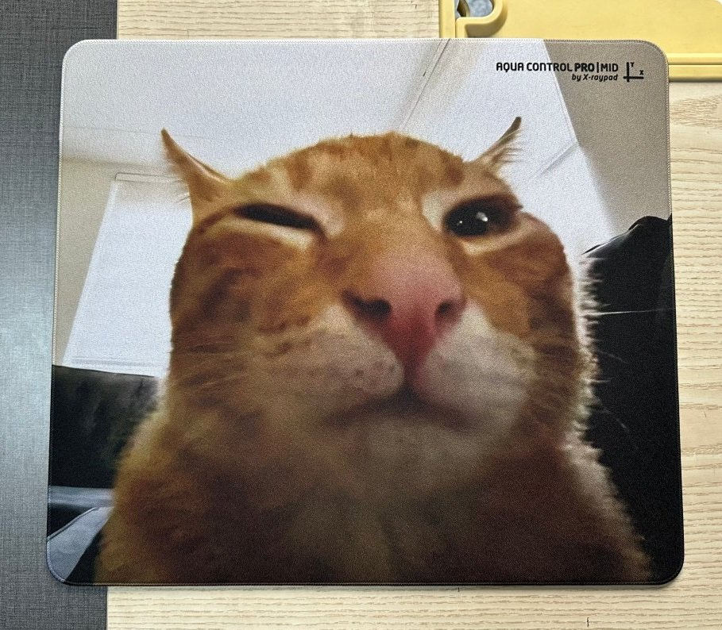
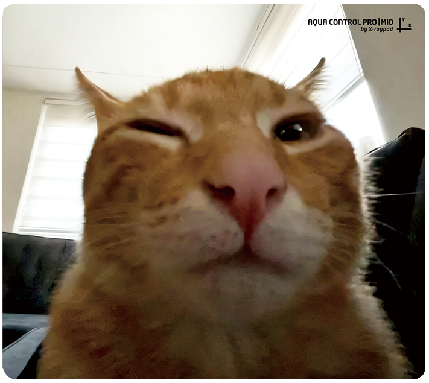
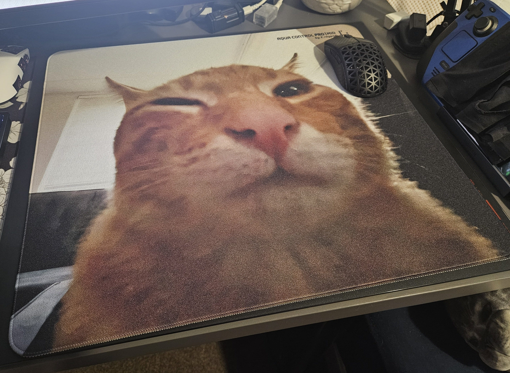
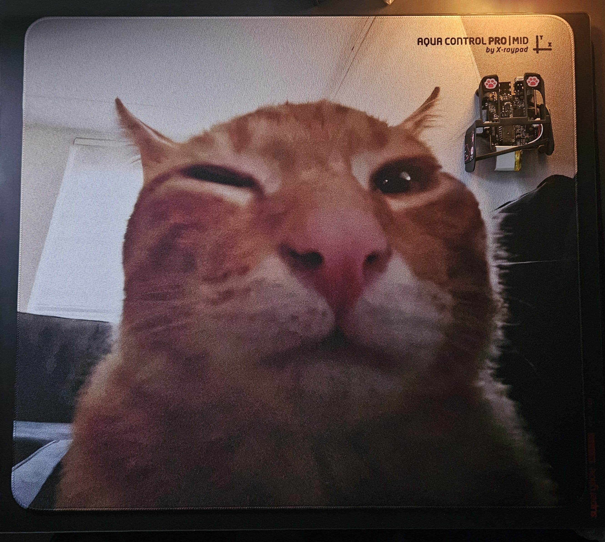
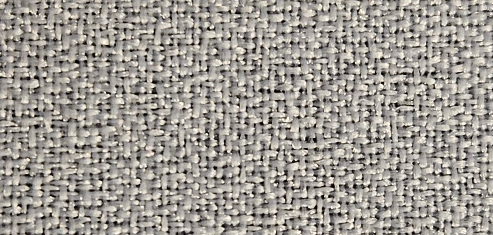
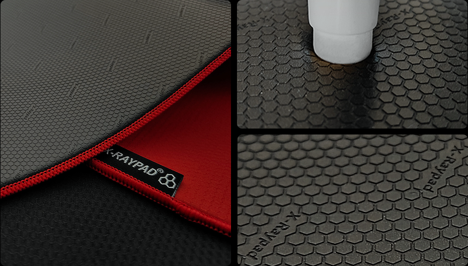
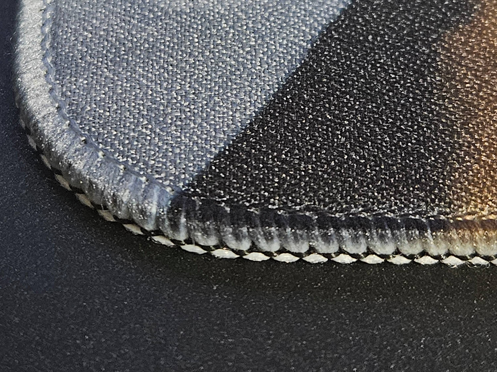

about
hello! i'm ipsu (or susu, or ipsusu).
i prefer they/them pronouns, but you can use whatever is easiest for you. i don't really mind!
i play as the character "Ipsusu Ipsu" in FFXIV. i have another website here for my FFXIV characters.
i'm most well known for my ipsuShade ReShade preset collection for FFXIV. they're a set of simple presets that are highly optimised for performance and quality. you can find more about them: here.
i'm very bad at staying in touch with people, but feel free to message me if you wanna chat :)
if you need to contact me for anything, my discord is ipsusu.
X-Raypad Custom Mousepad -
Aqua Control Pro - Mid
the "buh pad" review !
<-- go back | 2025-04-26 | by susu
** note: product was provided for free by X-Raypad for review. i was not paid for this review, i just wanted to try out the pad! **
TLDR: the custom print process is very good, and the x-raypad aqua control pro mid is a safe recommendation for anyone looking for a high quality, speed-focused cloth pad with a balanced static/dynamic friction profile.

my buh pad - img credit X-Raypad Jiuson, this was the image i was sent after production, just before the pad was shipped to me!
mousepad tested with -
mice: too many ,,,,, (mainly viper v3, pulsar x2f prototype, x2 crazylight)
skates: ultraglide rs dot, xraypad obsidian dot, obsidian air donut, jade dot + jade air donut (both jades provided for review with pad, thank you Jiuson!)
1. pad specs and overview
artwork: anything you want! i think xraypad are less picky about copyright of the image, so it's fully custom to what you want, with an optional “AQUA CONTROL PRO | MID by X-raypad” logo in top right.
it does however require a high quality image source. ideally around 2000x2000px. you can use upscaling to get it to that quality! that's what I did with this image. a 720p source png from the original buh tiktok vid (oscar!) upscaled to 1968 x 1693 px: link.
as you can see, the image doesnt need to be super sharp to look good, just make sure it's clean and without any compression or digital artifacting.
packaging: packed flat in a strong card envelope, with the pad stored inside a soft plastic bag/wrap
surface: textured cloth. “heated treatment” like the neon version
base: 4mm thick, "∑ honeycomb" poron
stitch: below surface, high quality. artwork is printed over the stitching, what they call a “clear stitched edged”. worth nothing that other xraypad custom pad types allow instead to have just a plain white or black stitched edge.
size options: my copy is 450 x 400 mm (currently out of stock). the other sizes they offer are:
- 360 x 300 mm - $48.80
- 490 x 420 mm - $69.80
- 500 x 500 mm - $85.80
price: $59.80 inc. FREE SHIPPING the other pads range from $48.80 - $85.80 depending on size, as shown above. (the free shipping is a big bonus for x-raypad, as their shipping is normally pretty expensive. you can use the free shipping to get some cheap skates and grip tape included for just the raw price of the items too.)
2. custom printing process
the process for ordering the pad was very simple, and they had multiple ways you can upload the artwork. for the best quality, i would say it would be better if you can provide a good quality source image of the appropriate aspect ratio initially. however, i’m sure they can work with you to crop an image to fit to the pad size if you just had an existing artwork or image you’d like to get printed.
there doesn’t seem to be any restrictions for what you can get printed, but it would be good to send them an email or dm to ask if you’re unsure if they’ll print a specific artwork / image
they provided me a preview of how the pad would look before it was printed (see below), so i could have made adjustments if needed! however, i provided an image that was exact to their specifications and was okay to proceed to production without any edits.

preview image provided before production [edited to remove white background]
3. custom print quality
xraypad does note that there is often slight colour deviation between image and print, and i think my print came out tiny bit darker than the provided artwork, but it still looks very good! since my art was upscaled from a 720p image, there isn't any fine detail that i can use to determine the ability to replicate high resolution art, but it does look very nice irl and it’s good to know that low resolution means that you can’t have a nice print.


4. production / shipping timeline
2025-03-24 - order placed, production start
2025-03-28 - pad production finished, tracking link provided
2025-03-29 - carrier picked up shipment (shipped via 4PX. China to UK)
2025-04-01 - departed from china airport
2025-04-03 - arrived in UK, processed customs, received by local carrier
2025-04-04 - delivered!
total time - 10-ish days
5. surface
the custom print ac pro mid, uses the same “heated treatment” surface as the ac pro mid neon variant. the textured surface is good for providing tactile feedback during your mouse movements, however i find it too rough to use for long periods without a sleeve. the small hairs on the underside of my forearm tend to get gently snagged on the weave every now and then, alongside the weave just being irritating on my skin over time.
this discomfort can be entirely mitigated by using a sleeve, and it’s perfect with my pulsar es palm long sleeve. i spent the majority of my time using the pad with this sleeve. i can’t see it having incompatibility with any sleeve type. if you don't want to / can’t wear a sleeve, i would not recommend this pad if you are sensitive to irritation from pad surfaces.

a close up of the weave in a white printed section of the pad
6. base and thickness

examples of the ∑ honeycomb base - img credit xraypad
the base is a standard 4mm thickness, with the structure of mid hardness poron foam. i don’t have many other cloth pads to compare it to, but it's definitely firmer than my “soft” artisan otsu, but slightly softer than my zowie g-sr-se rouge. it’s also firmer than my aqua control 2 deskpad.
the grippiness of the pad base sadly isn’t very good for my usecase. i stack my pads ontop of eachother due to limited space, but even ontop of my pulsar superglide glass pad, which normally provides a bunch of grip on my esptiger tang dao and artisan otsu, the ac pro mid base can’t find a solid grip and slightly moves if i push it. the lack of grip is the same on my xraypad heavybee p-chen (control/purple version) which uses the same “sigma” (∑) honeycomb poron base, so i think it’s just an issue with this base grip. the neon variant of the ac pro mid uses a different base that other reviewers say is very sticky, so perhaps you could request this version.
i have also heard that if you use wet the base a little bit, it grips alot more. i do think the dryness of the materal used makes it much slippier, so i can see that adding a bit of moisture would help adhesion to the desk.
7. edge stitching
the stitching seems to be great quality. it's a thin edge, with a tight stitch and is slightly below the surface of pad. the artwork print extending onto the stitching is a nice touch, it's even partly on the edges somehow!
they only offer this “clear stitched edged” version for the ac pro mid, but other custom mousepad types allow you to have just a plain white or black stitched edge.

the stitching and print on the bottom left corner of the pad
8. glide / friction profile
this pad seems to have low friction overall for a cloth pad, with an equal balance between static and dynamic friction. it is definitely more fast than it is controlled. even when pushing down into the pad with dots, friction is only slightly increased, due to the hardness of the “mid” base.
i don’t have many similar "speed" cloth pads to compare it against, but it has been compared to the artisan hien by other reviewers, and others who i’ve asked about this agree (just a bit less textured surface).
i would say it's just a safe glide profile if you are looking for a faster cloth pad, but don't want to go as fast as most glass offerings. it feels similar to the dynamic friction of the artisan hayate otsu, but without the high static friction.
the static friction does seem *slightly* higher than the dynamic, but this is modified by skates a ton, so your experience may vary. i have no way to test this currently, sorry...
the friction is even across the X and Y axes.
the static friction increases slightly from the day 1 experience as the weave gets a chance to wear a little. i can’t say how the pad wears over time, but i expect it to not change too significantly after the initial break-in period, as the pad seems of sufficient quality and the weave of the pad isn’t particularly delicate.
9. overall conclusion
the X-Raypad Aqua Control Pro | Mid is a safe recommendation for anyone looking for a high quality, speed-focused cloth pad with a balanced static/dynamic friction profile.
the custom printing process was a highlight, with great communication and previews of the pad provided before/after production.
the pricing seems fair considering the added labour involved with the design + printing process, and the fact that the flat packed shipping is included in this cost. i would say the pad itself is worth maybe $30-45 (depending on size), and you’re paying the extra for the custom printing process and included shipping.
if you're not comfortable paying the premium for the custom print, you can buy a premade ac pro mid for neon $40-50 on aliexpress.
you can buy your own custom X-Raypad Aqua Control Pro Mid: here!
thank you again to x-raypad for providing this pad for review, and thanks to X-Raypad Jiuson especially for reaching out!
social
i use the most:
twitter
bluesky (will use more when they add user uploaded videos)
i use rarely:
youtube
tumblr
reddit
tiktok